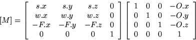
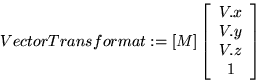

Aquesta matriu s'aplica a tots els vèrtexs del model geomètric de l'escena i els transforma, passant-los del sistema de coordenades de l'aplicació al sistema de coordenades de l'observador La matriu es calcula a partir de la posició de l'observador O, de la posició del centre de l'escena C i del vector cap amunt u.
Primer es calculen alguns vectors auxiliars:
F.x := C.x - O.x F.y := C.y - O.y F.z := C.z - O.z F.x := F.x /Mòdul (F) F.y := F.y /Mòdul (F) F.z := F.z /Mòdul (F) u.x := u.x /Mòdul (u) u.y := u.y /Mòdul (u) u.z := u.z /Mòdul (u) s := ProducteVectorial (F, u) s.x := s.x /Mòdul (s) s.y := s.y /Mòdul (s) s.z := s.z /Mòdul (s) w := ProducteVectorial (s, F)
Fixeu-vos que el vector F normalitzat és un vector en la direcció de O a C, i per tant té la direcció contrària a l'eix z del sistema de coordenades de l'observador. El vector s normalitzat és evidentment perpendicular a F i u, per tant té la direcció de l'eix x en el sistema de coordenades de l'observador. Finalment, el càlcul de w com a producte vectorial de s per F garanteix que w té la direcció de l'eix y en el sistema de coordenades de l'observador.
Ara, finalment, la matriu M d'una transformació geomètrica de translació per tal que els punts situats a O passin a tenir coordenades nul·les, seguida d'una matriu de gir a les direccions dels nous eixos de coordenades:
|  |
|  |